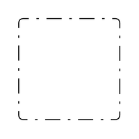
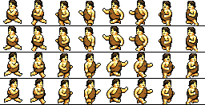

|
hBasic Manual Graphics
command changes
|
|||||||||||||||||||||||||||||||||
|
GR.SCREEN
GR.SCREEN
width_nvar,
height_nvar
{
,
density_DP_nvar
}
{ ,
density_SP_nvar
}
Gets the width
and height of
the VIew Size instead
of the device size.
The width and height returned from GR.SCREEN has been
modified to always return
the current canvas size (the draw view). This is the area in which you can draw. (Legacy basic returns the device size). This size may change if you hide or show either the status, navigation or action bars. density_DP Gets the screen density as pixels per inch. eg. 160 on a 160 dpi display. density_SP Gets the screen density as scaled pixels per inch.
e.g returns 320 on a 160 dpi display with a user
preference scale of 2X in settings.
It is important to have the graphics view being
displayed (in front) when executing this command.
You may need to use a PAUSE before executing this command, especially if you have just come back to the graphics screen or if the screen is just begining to be displayed. Recommended is 50ms or more.
Notes
To get the full size of the
device,
consider using the legacy SCREEN.SIZE, size[],
realsize[]
In hBasic, SCREEN.SIZE, size[] will only give back the console view size (not the graphics view size). |
|||||||||||||||||||||||||||||||||
|
GR.SCREEN.TO_BITMAP
GR.SCREEN._TO_BITMAP
bitmap_nvar
{ ,
x_nexp
,
y_nexp,
w_nexp,
h_nexp
{,scale_lexp}
}
Added new optional crop parameters.
If crop parameters are given, the returned bitmap will be created as the crop area defined by offset x,y and width,height w,h. Cropping is optional, but if used, all of x,y,w,h is needed. If the crop parameters are omitted, the area is by default the whole drawable graphics area which is the unscaled size of the real screen graphics view. w and h must be greater than zero. By default, x,y,w,h are expected to be unscaled real screen values. If you have scaled the screen with GR.SCALE and are working with virtual development coordinates, and you want to crop with virtual coordinates, then either;
a) add the optional scale flag (set it to
1);
If scale flag is 1, then x,y,w,h will be scaled by
the scales set by GR.SCALE.
If scale flag is 0 (default), then x,y,w,h will be taken as unscaled real screen coordinates.
Any other value is taken as 1.
or
b) Scale the values of x,y,w,h yourself before
calling the command without scaling.
Internally, the result of x, y (after any scaling) must be within the real screen area or you will get an error (see below). (You can get the real screen size with GR.SCREEN rW,rH) Errors
Any errors will not
RunTImeError. Instead the bitmap index returned will
be -1.
You can get the error message (if any) with getErrror$(), e.g
GR.SCREEN.TO_BITMAP
bmp, 100,100,200,300
IF
bmp < 0 THEN PRINT getError$() : END |
|||||||||||||||||||||||||||||||||
|
GR.SETACC
GR.SETACC
level_nexp
% default is
2
where level_nexp is; |
|||||||||||||||||||||||||||||||||
|
GR.TOUCH
GR.TOUCH
touched_lvar , x_nvar, y_nvar
{, unscale_lexp
} % first touch
GR.TOUCH2 touched_lvar , x_nvar, y_nvar {, unscale_lexp } % second touch touched returns true if the screen was touched. If the screen was touched, x,y are the returned touch coordinates. By default, these are the scaled (real) device coordinates. The scale is set by set by GR.SCALE. If you do not use GR.SCALE, the default scale is 1.0. An optional unscale flag was added and is by default false if ommited. If unscale is given and is true (non-zero), the scaled x,y coordinates are unscaled by the current screen scale (divided by GR.SCALE). This will give you back coordinates in the range of your development size. |
|||||||||||||||||||||||||||||||||
|
GR.BOUNDED.TOUCH GR.BOUNDED.TOUCH touched_lvar , left_nexp, top_nexp, right_nexp, bottom_nexp {, scale_lexp } GR.BOUNDED.TOUCH2 touched_lvar , left_nexp, top_nexp, right_nexp, bottom_nexp {, scale_lexp } touched returns true if the screen was touched within the bounds of the rectangle left, top,right, bottom. By default, the rectangle coordinates are for the actual (real) screen size. And expected to be already scaled by the user( relative to GR.SCALE). (Note: There is an error in the legacy manual that asks the user to divide coordinates by the GR.SCALE The coordinates should multiply by GR.SCALE (not divide). An optional scale flag was added and is by default false if ommited. If scale is given and is true, the rectangle coordinates will be scaled the same as the current screen scale (multiplied by GR.SCALE). This will test the touch in the scaled (real) range given your non-scaled development coordinates. The scale is set by set by GR.SCALE. If you do not use GR.SCALE, the default scale is 1.0. Note that the rectangle is treated with right,bottom as exclusive (not part of the rectangle). |
|||||||||||||||||||||||||||||||||
|
GR.TEXT.SCALEX
GR.TEXT.SCALEX
{
percent_nexp } { , paint_nexp
}
Set the horizontal scaling of the text
This will squash or stretch the text along the x-axis as a percentage. percent_nexp
A percentage of 50 will reduce the font width by
half. while 200 will double the width.
The value must be greater than 0. The default value is 100.
paint_nexp
Optional paint index to apply to. Omitted applies to
a new paint, which becomes the current paint.
|
|||||||||||||||||||||||||||||||||
|
GR.SET.DASH
GR.SET.DASH
{pattern_list_nexp}
{,offset_nexp}
{,radius_nexp}
{,paint_nexp}
Sets the paint stroke style for objects drawn to a path
effect of a dashed line.
pattern_list
This is a list containing a pair of numbers, with at
least one pair.
Each number is the number of pixels drawn of which the first number is 'ON' and the next number is 'OFF'. You can turn off the dash effect by specifying an invalid list index of 0. You can choose the default pattern by omitting this parameter or specify an invalid list index of -1 or less.
paint
If you don't specify the paint, then it will default
to -1, i.e a clone of the current paint, which
becomes the new current paint.
Example
dW=360
:
dH=640
% dev
size
gr.open "white",0,1 % color,bar,portrait gr.screen rW,rH % real WxH sW=rW/dW % scale to width gr.scale sW,sW gr.set.antialias 0 gr.set.stroke 2 % width of stroke list.create NL,pattern,30,15,5,15 GR.SET.DASH pattern,20,10 % set dash with rounded corner REM gr.set.dash % default dash REM gr.set.dash 0 % turn off dash gr.color "black",0 % black stroked gr.rect o,75,200,275,400 REM gr.paint.get p % save the paint REM gr.set.dash -1,,10,p % apply a rounded dash to a paint REM gr.set.dash 0,,,p % apply no-dash to a paint gr.render do: pause 50: gr.touch t,x,y : until t onbackkey: end

|
|||||||||||||||||||||||||||||||||
|
Clear a bitmap area with
transparency
GR.BITMAP.CLR bitmap_ptr_nexp
{, paint_nexp}
Fills a bitmap with transparency without destroying it. Anything already on the bitmap is cleared. There is no alpha blending. An optional paint object can be supplied for a fill otherwise it will be transparent.
This is
approximately 10x faster than deleting and
re-creating a bitmap. GR.BITMAP.BLOT bitmap_ptr_nexp , x_nexp , y_nexp, width_nexp, height_nexp {, paint_nexp} Same as gr.bitmap.clr but fills a rectangle within the bitmap.
This is slower than
delete+create but faster for small areas less than a
half the area of the whole bitmap.
|
|||||||||||||||||||||||||||||||||
|
GR.BITMAP.SCAF
GR.BITMAP.SCAF
bitmap_ptr_nvar
, scale_nexp
{, smooth_lexp}
Scale a bitmap by a scale factor in both directions
with optional smoothing.
The bitmap is replaced by the new image.
The bitmap is made writable (for Gr.bitmap.drawinto.start).
scale
e.g 2 will enlarge the bitmap to twice the original
dimensions.
e.g 0.5 will reduce the dimensions to half. a negative value inverts the image
smooth
true - smoothing is applied to scale
false - no smoothing default is false. If scale is 1.0, the smoothing has no effect. |
|||||||||||||||||||||||||||||||||
|
GR.BITMAP.LOAD
GR.BITMAP.LOAD
bitmap_ptr_nvar
, filename_sexp
{,
scale_nexp} {, smooth_lexp}
Load a bitmap from a file, with optional scaling and
smoothing. Unlike legacy Basic, the loaded bitmap is made writeable, meaning it can be used directly with Gr.bitmap.drawinto.start.
scale
(optional)
e.g 2 will enlarge the bitmap to twice the original
dimensions.
e.g 0.5 will reduce the dimensions to half. a negative value inverts the image
smooth
(optional)
true - smoothing is applied to scale
false - no smoothing default is false. If scale is 1.0, the smoothing has no effect. |
|||||||||||||||||||||||||||||||||
|
GR.CLIP.START
and GR.CLIP.END
GR.CLIP.START
object_ptr_nexp, left_nexp, top_nexp, right_nexp, bottom_nexp{,
RO_nexp} GR.CLIP.END {object_ptr_nexp}
GR.CLIP.START replaces the
legacy GR.CLIP
Google does not allow for a clip region to expand since Android Pie (API-28). Because of that 4 out of the original 6 Region Operators are not supported;
thus GR.CLIP.START only accepts 0 or 1 for the region code. GR.CLIP.END restores the canvas to the state (and region size) before the last clip. It is strongly advised to use GR.CLIP.END after your objects are clipped. Previously this was achievable with Region Op 2, but since API 28, GR.CLIP.END is the only way to restore the canvas size. object_ptr_nexp is the marker object returned of either the clip START object or the (optional) clip END object. These are useful for display list manipulation ( similar to GR.ROTATE). You may nest clips as long as each block is properly GR.CLIP.ENDed. These commands use the same canvas stack as GR.ROTATE.{start / end}. You may nest both types but you cannot interwine CLIP STARTs with ROTATE ENDs (and vice versa). i.e, Always match the correct END type with the last used START. e.g GR.CLIP.START... GR.ROTATE.START.... GR.CLIP.START... GR.CLIP.END...GR.ROTATE.END.. GR.CLIP.END |
|||||||||||||||||||||||||||||||||
|
Objects Accept Multiple Input These are enhancements made to accept multiple input parameters instead of just one with the same command.
GR.SHOW object_number_nexp {,
...
} shows one or more objects. GR.HIDE object_number_nexp {, ... } hides one or more objects. e.g
GR.HIDE cat, dog, mouse
See also other
multi-input
commands.
|
|||||||||||||||||||||||||||||||||
|
Object
Properties
GR.GET.PARAMS object_ptr_nexp , param_array$[]
In legacy Basic, this command gets the modifiable
parameters of the graphics object object_ptr into the
param string
array.
In hBasic this command also returns General Purpose parameters at the end of the array.
In addition, the general purpose parameters have been
extended with "x","y","paint","alpha", "speed" and
"dir" for
all objects. Object Property Values
Read-Only
Values
In hBasic, for GR.GET.VALUE and GR.MODIFY, all
parameters are 'get'-able, but not all parameters are
'mod'-ifiable. An example would be the "width" value of
a Sprite object
which is read-only. The updated Object Table is found
here.
There is no change to this command, except that all the
newly added general purpose
parameters are also available to get.
Added Array
option
As well as a single object, GR.MODIFY now accepts an
array pointer in place of the object. The modification is applied to all objects contained in the array. Any tag not belonging to any of the objects in the array will result in a run-time-error. So make sure all objects have the tags you want to modify. The array must be one-dimensional. (If you call it with a multi-dimensional array, the results are unpredictable.) If any one of the objects is a group object, each object in the group will also be modified (see below). Group Object behaviour
An alternative to an array is to use a group object.
However, groups
objects will only change general purpose
parameters of each object in it's list (as
well as the group object itself). X,Y
behaviourNon-gp parameters will only apply to the group object itself (not the objects in the list) e.g "list". If you modify the "x" or "y" of a group object, the objects in it's list also gets changed as a whole (see whole object positioning). Group objects will only be modified to one group level. If a group object contains another group object, the second group object will be ignored. Speed behaviour
Normally, the speed is positive along an object's
direction. For convenience, a negative speed is
allowed to represent movement opposite to
"dir".
A positive "speed" will move the object upon GR.MOTION. A zero "speed" stops it. A negative "speed" moves the object opposite to it's direction "dir" upon GR.MOTION.
Internally , object zero is reserved and unused. It
is always in the objects list for historical
reasons.
In legacy Basic, object zero is modifiable but will not be rendered and will give no error if attempted. In hBasic, object number zero is considered illegal and will run time error if given for graphics commands. The legal range of object numbers is from 1 to the last object. GR.MOVE object_ptr_nexp | array[ ] {, dx_nexp, dy_nexp }
Added Array
option
As well as a single object, GR.MOVE now accepts an
array pointer in
place of the object. The move is applied to all objects contained in the array. The rules for objects, arrays and groups are the same as GR.MODIFY.
Adds a value to
an object's parameter. e.g GR.ADD oCircle,"radius",50 % adds 50 pixels to a circle's radius
The object is
given as an object index and must be in the objects
list. Object 0 is invalid. ArraysThe parameter must be numeric. If any object does not have the parameter, there will be an error. If the object is a group object, each object in the group will also be ADDed (see Groups below). Becareful with parameters such as e.g "list" or "bitmap"..etc. Adding to these can have dangerous side effects.
An array arr[] may be used in
place of the object. GroupsThe ADD is applied to all objects contained in the array, with the same rule as Objects (above). The array must be one-dimensional. (If you call it with a multi-dimensional array, the results are unpredictable.)
An alternative to an array is to use a group object.
Unlike
GR.MODIFY, all
objects in the group list will be processed with the
ADD as long as the object has the parameter,
otherwise there will be an error. X,Y
behaviourThe group object itself is ignored. If a group object contains another group object, the second group object and it's list will be ignored.
Speed
behaviour
If ADDing an objects "speed" results in a
negative value, see GR.MODIFY
for the affect of negative speeds.
(See also GR.TWEEN.ADD)
Adds a vector to an object.
e.g GR.PUSH oCircle, 45, 100 % pushes the circle with a vector of 45° at 100 pixels/sec. This adds a vector upon the object's current vector. It will affect the parameters "dir" and "speed". The object's current vector is added with the applied vector direction (degrees) and speed (pixels/sec). Internally, the vector is added using vector addition (as opposed to just adding "dir" and "speed"). The applied speed is allowed to be negative (pull). This is the same as pushing in the opposite direction. Note that the final object's "speed" will always be positive in the resultant direction. The rules for objects, arrays and groups are the same as GR.ADD.
(See also GR.TWEEN.PUSH)
|
|||||||||||||||||||||||||||||||||
|
Display List
Commands
Display List
Ordering
Gets the z-index of an object object_ptr into
index. Returns a value of -1 if not on display list. You can supply any number of index,object pairs. Note that this can potentially return position 0 even though the reserved object 0 cannot be moved.
Display List
Moving
GR.DL.MOVE will move the object(s) 'after' the z-index
pos in the
display list.
You can give multiple objects or arrays.
If it's an array, each object in the array is moved. An object may also be a group object (see below). The object(s) does not have to already be on the display list, but must be in the object list.
If an object does not exist (not in the object list),
there will be an error.
Current display list objects will be shifted to the
right to make room.
The first object will be moved 'after' pos, i.e (pos+1).
Each successive object is moved 'after' the last moved
object.
The last object moved will be nearest the end of the display list (screen front).
Any holes left behind are filled by shifting objects
from the right to the left.
Move to
Back
To specify a move to position 1, set pos to 0. The object will be moved after position 0 and will render as the first item in the display list (back of screen).
Move to
Front
To specify a move to the last position, set
pos to the last
position or alternatively to a negative number. This
will be rendered last in the display list (front of
screen).
Also, If pos
is greater than the last position, then the object is
also moved to the last position.
Special Moves If the object is not on the display list, it will still be put on the display list (if it exists on the object list). This is one way to move objects back onto the display list.
If the object to move is a group object, the group
object itself is not moved. But each object in it's
list is moved in turn (even if the group object itself
is not on the display list). The last group list item will be nearest the end of the list. Any group within a group is ignored. (since hBasic v5.00, groups objects are not added to the display list, only their list objects are added). If any object does not exist (not in the object list), there will be an error.
Note that the object at index 0 is never shifted. This
object is a reserved object and is never moved.
Display List
Removing
An object not on the display list never gets
rendered. Removing an object from the display list does not remove it from the object list.
GR.DL.REMOVE <
object_ptr_nexp
| arr[]_array[] >
{, ...}
Remove an object_ptr(s) from the
display list.
If you specify an array arr[] instead of an object_ptr, each object in the array is removed in turn. You may specify any number of objects or arrays by separating with commas. If an object is not on the display list, there is no error and no action is taken. If an object does not exist (not on object list), there will be an error. You cannot remove object 0 (there will be an error). If the object is a group object, the group object is removed (if it is on the display list). The objects in the group's list are also removed (regardless of whether the group object was on the display list). (Note that for rendering, group objects do not have to be on the display list, but the objects in their lists do.) |
|||||||||||||||||||||||||||||||||
|
Sprites
See Sprites
and Animation for an overview of these items.
A Sprite display list object is similar to a Bitmap
display list object but with the addition of an
optional animation.
As well as the general purpose
properties (including speed and dir) sprites also
offer the following for GR.GET.VALUE
"bitmap" , "anim" , "arate" , "aframe" , "aloop" ,
"width" and "height" and for GR.MODIFY,
"bitmap" , "anim" , "arate" , "aframe" , "aloop" see Sprite
Properties for more information.
GR.SPRITE.DRAW spr_nvar, x_nexp, y_nexp, bmpPtr_nexp {, animation_nexp} Creates a Sprite object which is returned in spr and adds it to the display list. A Sprite must have a bmpPtr called a Standing bitmap. This is displayed if the sprite has no animation. The bmpPtr and it's bitmap must be created in advance. The command can have an optional animation. If you use this parameter, you must create the animation in advance . If not, you can omit this parameter and attach an animation later. By default a sprite's animation is 0 (no animation). e.g
GR.BITMAP.LOAD
bmp,
"h-stand.png"
GR.SPRITE.DRAW
s0, 100, 100, bmp
% a sprite with
no animation
|
|||||||||||||||||||||||||||||||||
|
Animation
See Sprites and
Animation for an overview of these items. Animations are not display list objects but can be attached to them. Animations can only be attached to Sprites.
Loads an animation from a file. The animation pointer
is returned in ani
The fileName is not optional but can be an empty string. If fileName is an empty string, an empty animation is created from empty bitmaps. w and h are the width and height of a frame in pixels. nFrames is the number of frames to load and is the length of the animation. skip is the optional number of frames to skip before loading, i.e the offset frame. Sprite Sheets If fileName is not an empty string, it must be a sprite sheet file. This is simply an image file containing frames of smaller images of fixed frame size (w,h). Below is a 256x132 sprite sheet containing 32 frames. Each frame is 32x33.  by Hapiel CC-BY 3.0 (opengameart) You can load any number of frames per animation. e.g You could load two animations of 16 frames each, one animation for 'left', and the other for 'right', the 'right' animation would need a skip offset of 16. e.g
GR.ANIM.LOAD
aLeft,
"h-anim.png",32,33,16 GR.ANIM.LOAD aRight, "h-anim.png",32,33,16,16 % start load from offset 16 The number of rows, or columns does not matter, the command will try to read the image from left to right and top to bottom for any frames. If there are not enough frames, you will get empty frames or cut frames. Accepted formats are jpg, png, bmp, gif.
Scales each frame of an animation ani by a factor of
scale in both
directions.
scale
e.g 2 will enlarge the bitmap to twice the original
dimensions.
e.g 0.5 will reduce the dimensions to half. a negative value inverts the image
smooth
true - smoothing is applied to scale
false - no smoothing default is false. If scale is 1.0, the smoothing has no effect. GR.ANIM.GETF ani_nexp, bmp_ptr_nexp, frame_nexp
Copies a frame from an animation
ani, into a
bitmap given by bmp_ptr GR.ANIM.PUTF
ani_nexp, bmp_ptr_nexp, frame_nexpBoth the animation and bitmap pointer must already exist. This overwrites any old bitmap of bmp_ptr. Even if the bitmap was previously deleted, it will use this bmp_ptr for the new bitmap. Frame numbers are zero based (0 is the first frame).
Copies a a bitmap given by bmp_ptr into a
frame of an
animation ani
This overwrites any old bitmap of the frame in ani. Both the animation and bitmap must already exist. Frame numbers are zero based (0 is the first frame). |
|||||||||||||||||||||||||||||||||
|
Motion and Tweens GR.MOTION GR.MOTION < object_ptr_nexp | arr[]_array[] > {, ...}
GR.MOTION.ALL
This command will trigger several things.
GR.MOTION
Normally you would use the first form (without
arguments) in which all objects are updated. GR.MOTION <
object_ptr_nexp | arr[]_array[] >
{, ...}These objects must be on the display list, otherwise they are ignored.
The second form is for advanced usage, where only the
specified objects are moved (even if they are not on
the display list). GR.MOTION.ALLYou may specify multiple objects or an array of objects in any order. Arrays
If you have a set objects in an array, then e.g
GR.MOTION myMenu[] will apply to the objects in
myMenu[]. If any object in an array is a group object (see below), motion is applied to objects in the group list but not the object itself. Groups
If any object is a group
object, motion is applied to all objects in it's list,
except if an object is another group object.
Group
objects themselves are unaffected. Thus motion
can only applied to one level per group.
The third form will update all objects, even if they
are not on the display list. This is for advanced
usage.
Objects that have zero speed will not be moved.
Sprites that have no animation or zero animation rates will not be animated. Group objects are ignored. If the object(s) has tweens, then the tweens will be executed. An object movement or update is timed relative to the previous GR.MOTION or GR.MOTION.MARK time (explained here). Animations and Tweens are timed the same way as motion. Movement for an animation is immediate. It is the responsibility of the coder to display the first position and/or frame before entering a GR.MOTION loop. The results are not displayed until the next GR.RENDER. This gives you an opportunity to do collision testing or to detect the end of an animation or end of a tween. If there are long periods between GR.MOTIONs, the time gap will still be calculated and the object might be placed at a large distance ahead. If this is not desired, you can call GR.MOTION.MARK to reset the start reference for the next GR.MOTION. This will ensure that the next GR.MOTION does not move the object relative to the previous call.
Marks the current time from which the next GR.MOTION
will update relative to this time.
Otherwise each GR.MOTION updates an object relative to the last GR.MOTION time. This command does not move objects. You would need this command,
A) Before you enter a motion loop for the first
time. or B) If you have come out of a GR.MOTION loop , have waited for a long time. And want to continue where you left off.
This command resets the calculation, so that the
objects can continue where they left off for future
GR.MOTIONs.
Without this command, each GR.MOTION bases motion on the previous GR.MOTION reference. By this time the objects may have moved a long distance.
A Tween is a change of an object's property over a
period of time.
Tweens are triggered by GR.MOTION. They are removed after their duration expires. Tweens are executed before any motion. (see also GR_TWEENS())
GR.TWEEN.ADD <
object_nexp | arr[]_array[] >
,
parameter_sexp , rate_nexp , duration_nexp
{, delay_nexp}
Adds a tween to an object. e.g GR.TWEEN.ADD oText,"x",100,5000
% adds a
tween to move text to the right at 100 pixels/sec for 5
secs
A change is triggered for each GR.MOTION according to the time past since the last GR.MOTION or GR.MOTION.MARK. Tweens are executed before any motion. object must have the given parameter or there will be an error. parameter must be numeric. rate is the rate of change. It's unit depends on the type of parameter.
e.g the rate for parameters "x" and "y" are in
pixels/sec. For "angle" it will be degrees.
..eg For "speed" it will be pixels/sec2 (change in speed). duration is in milliseconds. (1 second = 1000 miliseconds).
The duration diminishes with each GR.MOTION.
When the duration reaches zero, the tween expires and is removed. A zero duration will be ignored, the tween is not added, and there will be no error. A negative duration is perpetual. The tween does not expire. The only way to remove such a tween is to use GR.TWEEN.CLR.
delay
(optional) is in milliseconds. (1 second = 1000
miliseconds).
Adds a delay before the tween executes. The delay
diminishes with each GR.MOTION. When the delay reaches zero, the tween will start with the next GR.MOTION. The default delay is zero (no delay). A negative delay is forced to zero. Objects
The object is
given as an object index and must be in the objects
list. Object 0 is invalid. Tweening an object, adds a tween of that parameter to the object. Tweens are uniquely defined by their object index and parameter type. To get the number of active tweens, use the function GR_TWEENS().
If you add another tween to the same object and same
parameter, then the existing Arraystween, will be replaced. For the same object, you can add tweens with different parameters.
The object index may be replaced with an array
pointer arr[]. Tweening an array
will add tweens for all objects in the array with the
same rule as for objects. GroupsIf any of those objects is a group object, then that group will be tweened with the same rule as for a group.
Tweening a group object will add tweens for all
objects in the group with the same rule as for
objects. AccelerationIf any object inside a group is itself a group, that inner group object and it's list is ignored, thus objects in a group are only tweened to one level. Group objects themselves are not tweened.
Tweening the "speed" of an object will apply
acceleration. This will only be applied for it's
current direction. ConflictsTo apply acceleration with a specific direction, consider using GR.TWEEN.PUSH.
In general, be careful if you are both tweening and
applying motion to some
parameters such as "x","y","aframe",.. etc, as doing
so can cause conflicts.
To turn off motion, set "speed" to 0. To turn off animation, set "arate" to 0 or remove the animation ("anim" to 0).
parameter_sexp , amount_nexp , duration_nexp
{, delay_nexp}
Adds a special tween that gradually adds to the parameter during the course of the duration. Instead of specifying the rate, you specify the final amount to be added. The rules for delay, objects, arrays and groups are the same as GR.TWEEN.ADD. The optional delay is by default 0. At the end of the duration, the parameter will have a goal value of
goal = (initial value) + (amount). The (initial value) is taken as the value of the
parameter at
the time of the command.This is an alternative to GR.TWEEN.ADD where the final added amount is already known. e.g GR.TWEEN.GOAL oText,"x",200,500
% adds a
tween to move text 200 pixels to the right
in half a second.
(see GR.TWEEN.ADD for tween mechanism with GR.MOTION). amount is the amount to be added. It's unit depends on the type of parameter.
e.g the amount for parameters "x" and "y" are
in pixels. For "angle" it will be degrees.
..eg For "speed" it will be pixels/sec...etc. duration is in milliseconds. (1 second = 1000 miliseconds).
The duration diminishes with each GR.MOTION and the
parameter will get closer to it's goal.
When the duration reaches zero, the tween meets it's goal and is removed. Negative or Zero durations are ignored, and the tween will not be added (no error).
GR.TWEEN.PUSH <
object_nexp
|
arr[]_array[] >
,
direction_nexp
,
acc_nexp , duration_nexp
{, delay_nexp}
Adds a special tween that accelerates an object with a direction upon the object for a duration and optional delay. (see GR.TWEEN.ADD for tween mechanism with GR.MOTION). This adds a vector upon the object's current vector with each cycle of the tween. It is the same as GR.PUSH at a rate over a period of time. It will affect the parameters "speed" and "dir". The vector is added with a direction (degrees) and speed per second i.e acc (pixels/sec2). Internally, the vector is added using vector addition (as opposed to just adding "dir" and "speed"). acc is allowed to be negative. This is a deceleration (pull). Note that after the push is applied, the object's "speed" will always be positive in the resultant direction "dir". The added tween has a special parameter called "push". To delete a push tween, you can use GR.TWEEN.CLR obj, "push" as with all tweens, you can only have one tween with a "push" type per object. The rules for duration, delay, objects, arrays and groups are the same as GR.TWEEN.ADD. See also GR.PUSH.
GR.TWEEN.CLR
GR.TWEEN.CLR {< object_nexp | arr[]_array[] > } { , parameter_sexp }
Removes tween(s), whether or not they are on the
display list.
In the first form, all tweens are removed from the system. In the second form, only tweens with matching objects and/or parameters are removed. If the tween does not exist, no action is taken, there will be no error. If either the object or parameter is omitted, it will be treated as a wildcard. The comma is required for a parameter. Examples
GR.TWEEN.CLR
% remove all
tweens from
all objects The rules
for arrarys and groups are the same as GR.TWEEN.ADD.
GR.TWEEN.CLR circle1, "x" % remove x tween for object circle1 GR.TWEEN.CLR square2 % remove any tweens from square2 GR.TWEEN.CLR squares[] % remove any tweens from objects in an array GR.TWEEN.CLR ,"y" % remove all tweens with parameter "y" GR.TWEEN.CLR squares[],"y" % remove y tweens from objects in an array |
|||||||||||||||||||||||||||||||||
|
-End
|